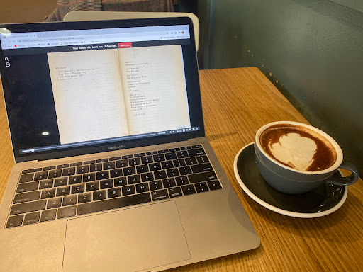

Well, well, well. The homesickness has finally set in. I'm honestly impressed with how long it took. I've been in England for... *checks watch* 6 weeks now??? SIX???
I'm going to be honest in this post because I promised myself I'd be honest. I'm doing... okay. That doesn't mean that I'm not doing well, but the magic of the UK has worn off a little bit and I've been hit with how major of a thing this is that I'm doing. I'm loving it, don't get me wrong, but I have my days where I just don't want to make the 20 minute walk into town to get dinner, and I don't want to cook for myself, so I end up eating a handful of cashews for dinner. Or it hits me that I'm in a different country with people that I don't really know (even though I've gotten to know so many people here whom I absolutely adore! And it feels like I've known them for years) and I'm doing this... alone. I will be sitting there, completely fine, loving my time here, learning SO MUCH, but suddenly the severity of my situation hits me and I feel the exact same as I did after saying goodbye to my parents and entering security at O'Hare: terrified. And alone. But ecstatic to be here. Ecstatic to be learning so much and to have such an amazing opportunity in front of me. I'm doing The Thing. And I've never done anything like this before. And I know that I'm going to come back to the US a completely different person, a more cultured person, with a better world view. But what if I don't like that person? What if no one else does, either?
And truth be told, I have so much on my plate that sometimes (ok not sometimes, like 90% of the time) I end up not leaving my room for 24+ hours, not seeing a single soul, not talking at all. And it gets lonely. But I have work to do, and that keeps me busy. HOWEVER. That's exactly what I signed up for. I knew that going to Oxford meant that I was sacrificing time to travel. I chose this opportunity specifically because I knew how much it would push me intellectually. I knew that it would push me out of my comfort zone. I chose this program because I wanted to prioritize my academic and intellectual growth. And that's exactly what's happening. I've never felt so smart before, even though I'm surrounded by people who go here as actual matriculated students, whose IQs probably reach like 300. I feel like I measure up. And that's huge.
Okay! That was depressing, let's move on! I think it's important to be honest about how I'm doing. Social media is already a highlight reel, and I promised myself I'd keep it real while I was here. So there you go. That's how I'm actually doing. Now, moving on to what I've done since last posting!
First things first... a lot of work. I mean a LOT. In the past week alone, I've read two books (The Shrouded Woman by María Luisa Bombal and The Kingdom of This World by Alejo Carpentier) and written a 6-page essay on them; I've read two 40-page short stories and written another 6-page essay on those; AND I've written 10 pages of my short story project. And guess what! I enjoyed doing it (for the most part. I mean, I'm human, of course I had moments writing my essays where instead of writing anything useful, I just wrote "i hate this i hate this i hate this i hate this")!!!! It's almost as if when I'm doing this work, I can FEEL my brain getting wrinklier. Pretty cool.
In other news, I've been sick :( There's a little thing over here called the "Fresher's flu," which basically means that during the first week or two of the term, everyone gets a nasty cold. I was not immune. I started feeling bad last Monday. It is now the NEXT Thursday and I have the tiniest of a runny nose and a little cough (but bad enough to be embarrassing when I'm in public). Now, all this is fine, I can deal with a little cold. What I can NOT deal with, however, is the possibility of having COVID. So imagine the panic that washed over me (I'm talking stomach-dropping, heartbeat-racing, cold-sweating panic) when one of the other visiting students with whom I'd been spending a lot of time with got a false positive. She took 2 PCRs and both came back negative, so we're fine!!! BUT, I did have a good 48 hours of panic after her rapid test came back positive. The UK is really good about making sure people have access to testing, so they hand out a TON of self-administered Lateral Flow Tests, and encourage everyone to test themselves twice a week. So that's been what I'm doing. But having a lot of COVID anxiety (not even anxiety anymore, like, this a full-on obsession) means that checking my results can be difficult. I've called my mom several times just so that I'm not "alone" when I check the result. Not great!!! We're working through it. I will one day not be traumatized by this.
In even more other news, I've developed a love of chai lattes. I've never been a tea drinker (yes I know chai is tea but it doesn't taste like it, ok??), and coffee makes me a neurotic mess, so when I discovered a hot drink that makes me feel like an adult (so, basically not hot chocolate) AND tastes like cinnamon toast crunch??? Obsession (the good kind, not the COVID kind). In my free time, I've been watching an ungodly amount of It's Always Sunny in Philadelphia because it's on UK Netflix, and I've started season 3 of You. Other than that, when my friends are available, we hang out at the JCR, which is Oxford's on-campus bar and hang out. I lost royally at a game of pool a few days ago. It was actually quite embarrassing. I also joined St. Catz's choir! It's a really small group that's student-lead, and we are only singing little Christmas Carols so far, but at least I have a musical outlet. Not having a guitar here means that I am itching to make music.
I'm sorry that I don't have more to share, and that this has been a little bit of a sad entry. But I needed to be honest. I'm hoping for better days coming up, as I get into a routine and start pushing myself to get out more. In the meantime, here are a few pictures that I took this week. Because I spent most of it inside doing homework, I don't have many. Sorry!
